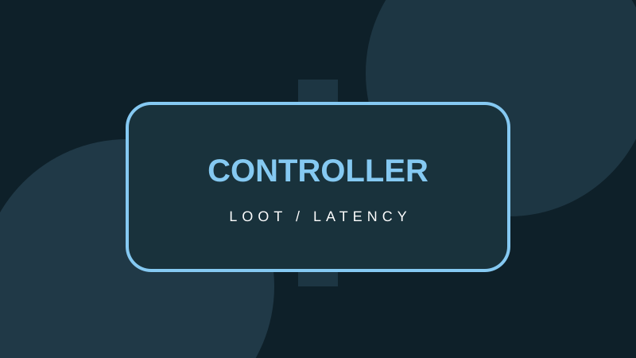

When a controller moves your character or camera without permission, you need a diagnosis—not a risky internet hack. This guide walks through safe, reversible checks before you spend money.
What stick drift actually means
Stick drift is unintended movement reported by an analog stick when you are not touching it. A character may walk, a camera may rotate, or a menu selection may move on its own. The cause can be mechanical wear, contamination, calibration errors, or a game-specific setting. Do not assume every unexpected movement means a broken controller.
Start with a simple isolation test
Set the controller on a flat surface, remove your hands, and observe whether the issue persists. Try a different game or a system controller-test screen if your platform provides one. On a PC, use a trusted operating-system controller test rather than installing an unknown utility. If the movement happens only in one game, check that game's input settings first.
Rule out connection and software issues
Restart the game and reconnect the controller. Install official controller firmware updates when offered by the console or manufacturer. For wireless controllers, test a wired connection if supported. Connection faults can cause missed or delayed inputs, but a persistent off-center analog reading points more strongly toward a stick or calibration problem.
Understand dead zones before changing them
A dead zone is the area around the stick's center where small input is ignored. A slightly larger inner dead zone can hide minor drift, but it also makes small aim adjustments less responsive. Increase the setting in small steps until idle movement stops, then test aiming and movement. If the game offers separate left-stick and right-stick settings, adjust only the affected stick.
Check calibration options
Some platforms and controller apps offer official calibration or reset procedures. Follow the instructions for your exact model, since menus and capabilities vary. Record your original settings first. A software recalibration may correct an offset, but it cannot restore a physically worn sensor.
Clean carefully—without flooding the controller
Turn off and disconnect the controller before cleaning. Use a dry, soft brush or microfiber cloth to remove visible dust around the stick opening. Do not pour liquid into the mechanism, spray household cleaners into the controller, or use compressed air at dangerously close range. If the manufacturer provides a specific cleaning method, prioritize it. Opening a controller can damage delicate parts and may affect warranty coverage.
When a dead-zone workaround is not enough
If the required dead zone becomes so large that precise control is difficult, or the input jumps unpredictably, consider a warranty claim or professional repair. Stick-module replacement requires model-specific parts and tools; some controllers are designed for easier module replacement than others. Compare the repair quote with the cost of a replacement controller, and check local warranty rights before opening the device.
Do Hall-effect sticks eliminate drift?
Hall-effect sensors measure magnetic fields instead of relying on the same type of sliding electrical contact used by many conventional potentiometer sticks. This can reduce one common wear mechanism, but it does not guarantee a drift-free controller: springs, mechanical centering, calibration, and electronics can still develop faults. Judge a product by repairability, support, and independent testing rather than an absolute marketing claim.
A five-minute troubleshooting checklist
First, confirm that the movement occurs without touching the stick. Second, test a second game or official input screen. Third, reconnect and check firmware. Fourth, adjust the inner dead zone in small increments and evaluate responsiveness. Fifth, if the problem persists across games, review warranty or repair options. Stop if the controller is damaged or behaves unsafely.
Bottom line
Minor drift may be manageable with careful calibration or dead-zone settings, but severe or worsening drift often needs hardware attention. Avoid miracle-fix videos that recommend harsh chemicals or risky disassembly. For a broader controller setup baseline, read our controller settings guide.